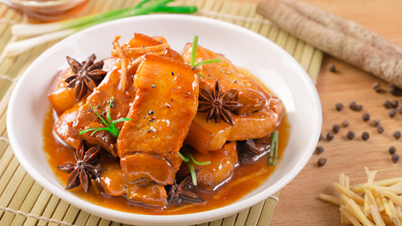

Thịt vịt kho tàu với hạt sen, bột quế và cam tươi

- Khẩu phần 4
- Chuẩn bị 15 phút
- Thực hiện 30 phút
Nguyên liệu
- 300gr thịt vịt
- 60gr hạt sen tươi
- 1/2 muỗng cà phê bột quế
- 3 củ hành tím
- 100ml nước cam vắt
- 1 gói Gia Vị Hoàn Chỉnh - Thịt Kho Tàu
- 1 muỗng cà phê nước đường ( nếu bạn dùng nước cam
hộp thì không cần dùng đường)
- Nước lọc chỉ còn 150ml
Hướng dẫn thực hiện
- Hạt sen lấy tim rồi luộc cho đến khi vừa chín, vớt ra và để ráo nước.
- Băm nhuyễn hành tím sau đó ướp thịt vịt chung với bôt quế và 1 gói
Gia Vị Hoàn Chỉnh - Thịt Kho Tàu.
- Cho thịt vào nồi, thêm 1 bát nước cho xăm xắp mặt thịt. Đun to lửa cho
sôi.
- Khi sôi rồi thì vặn nhỏ lửa, kho khoảng 30 phút, hoặc đến khi thịt chín
nhừ.
- Đến khi nước sốt gần cô đặc lại thì cho hạt sen vào và tiếp tục đun lửa
nhỏ thêm khoảng 20 giây thì tắt lửa.